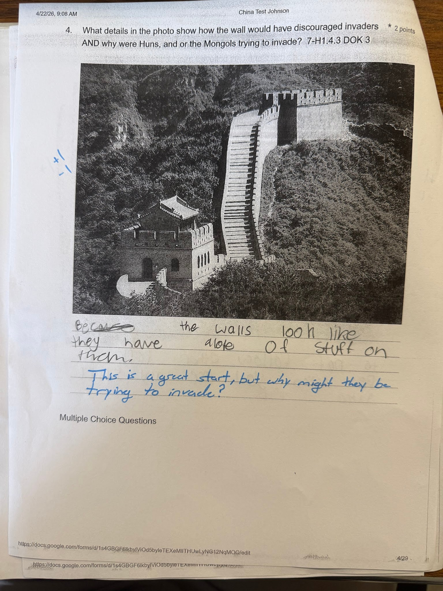

For this example, I chose to use a recent test my students took on ancient China. This artifact, in specific, is asking the student a two-part question of what discouraged invaders, and why people would try to invade China in the first place. In this example, the student only somewhat responds to one of the prompts and disregards the other part of the question. I then wrote a note to the student as a response to hopefully get the student on the right track for answering the second part of the question. As an educator, I believe that when you are interpreting students' thinking and you are providing the student with feedback, it is important to make your feedback clear and to the point. It is also important to focus on a few aspects that a student can improve upon instead of making them feel like all of their work is completely incorrect. This is because when a student might receive an essay of theirs back and it is completely marked up with a red pen, and they’re supposed to make a huge amount of corrections, this could feel discouraging to the student, and they may feel as though the hill is too high to climb, and they might never reach their goal.